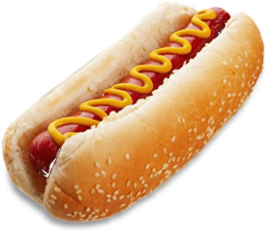
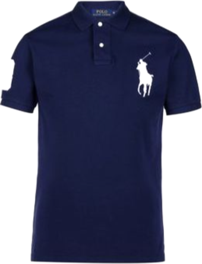
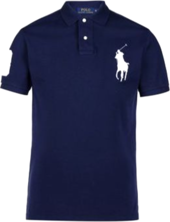
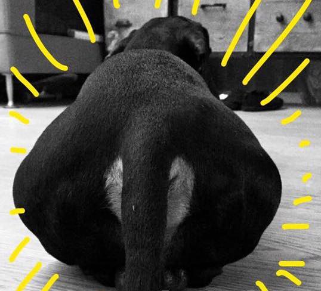
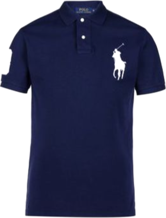

General misinterpretations of Polo
 

Polo is a male 9kg weighted belly bean bodied shape animal. He responds to the name of Polo, Pops, Poppers, Popzzicle, Papi and so on. Born with short and shiny jet black fur and brown coloured eyebrow dots. He is now 13 years old with grey and balding patches and developed a habit of begging for food.
Polo is a dacshund. He is majorly stumpy and a long boi. Bad sense of smell and has selective hearing.
| Strengths | Weaknesses |
|---|---|
| Can jump for food | Lazy and unfit |
| Likes to petting | Poops more than he eats |
His chicken thighs.

